Sección de noticias
Noticias de Quantum Volt RD
Las noticias que publicamos cada día en nuestras redes, también aquí en nuestra página: energía solar, electricidad, domótica y tecnología en República Dominicana, con asesoría para tu hogar o negocio.
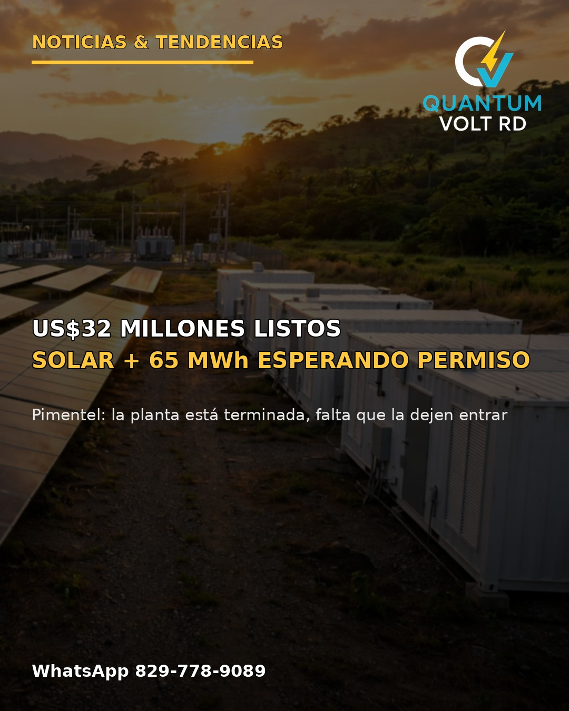
25 de noviembre de 2026 · Energía solar · Baterías · República Dominicana
En Pimentel ya está terminada una planta solar con baterías de US$32 millones: 30.88 MW de paneles y 65 MWh de almacenamiento, con 4 horas de descarga para entregar energía firme en la hora pico. Lleva dos meses y medio lista sin poder operar, esperando la autorización para conectarse al SENI.
Leer la noticia completa →

24 de noviembre de 2026 · Energía solar · República Dominicana
República Dominicana está evaluando instalar paneles solares flotantes en los embalses de sus presas, para generar más energía limpia sin ocupar tierra. Todavía es una evaluación, no un proyecto aprobado.
Leer la noticia completa →

23 de noviembre de 2026 · Energía solar · República Dominicana
La República Dominicana aprobó una nueva licitación de hasta 900 MW de energía solar y eólica, y cada central nueva debe llevar su propio sistema de baterías, capaz de entregar energía durante 4 horas seguidas. La SIE formalizó el proceso con la Resolución SIE-155-2026-LCE, con contratos de 15 años para abastecer a EDENORTE, EDESUR y EDEESTE.
Leer la noticia completa →
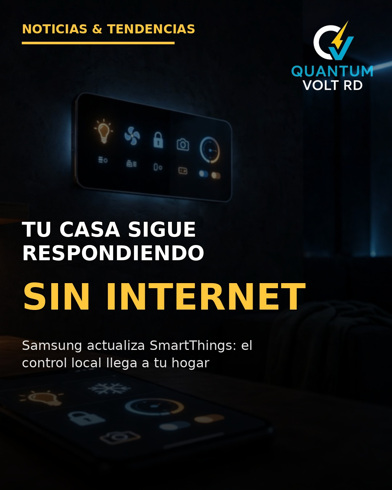
22 de noviembre de 2026 · Hogar inteligente · Domótica
Samsung actualizó SmartThings, su plataforma con 470 millones de usuarios, con control local: si tu teléfono y tu hub están en la misma Wi-Fi, las órdenes van directo al hub, ~30% más rápido, y la casa sigue respondiendo si cae el internet externo. La actualización SmartThings Now también sugiere rutinas y suma medidores de energía en tiempo real.
Leer la noticia completa →

21 de noviembre de 2026 · Energía solar · Baterías
El litio casi duplicó su precio en 6 meses y presionó el costo de las baterías cerca de un 5%. Pero CATL, el fabricante más grande del mundo, lo dice claro: la celda misma ya cuesta menos de US$100 por kWh, y un sistema completo de almacenamiento a gran escala sigue por debajo de US$150 por kWh. Y hay un dato con fecha: China elimina el 1 de enero de 2027 el beneficio fiscal a sus fabricantes.
Leer la noticia completa →

20 de noviembre de 2026 · Energía solar · República Dominicana
República Dominicana contará a finales de noviembre con su primer sistema de almacenamiento en baterías: 47 MW al sistema eléctrico nacional, para reforzar el suministro justo en la hora pico, de 7:00 a 11:00 de la noche. Antes de que termine el año se sumarán otros dos proyectos, con la meta de llegar a al menos 800 MW en baterías antes de 2028.
Leer la noticia completa →

19 de noviembre de 2026 · Energía solar · República Dominicana
La SIE eliminó el tope del 15% por circuito que frenaba cuánta energía solar podías inyectar a la red. Ahora la capacidad se define con un estudio técnico, y si en 45 días la distribuidora no te aprueba el sistema, queda aprobado automáticamente. Además, el crédito por tus excedentes sube del 75% al 100% y el medidor bidireccional va gratis.
Leer la noticia completa →

18 de noviembre de 2026 · Energía solar · Baterías
La Unión Europea acordó acelerar los permisos para renovables, redes y almacenamiento: la solar con su batería asociada deberá autorizarse en un máximo de 3 meses, y las baterías independientes y los puntos de recarga en 6. Todavía es un acuerdo provisional, pero la dirección es clara: el mundo está quitando trabas a la solar con batería.
Leer la noticia completa →
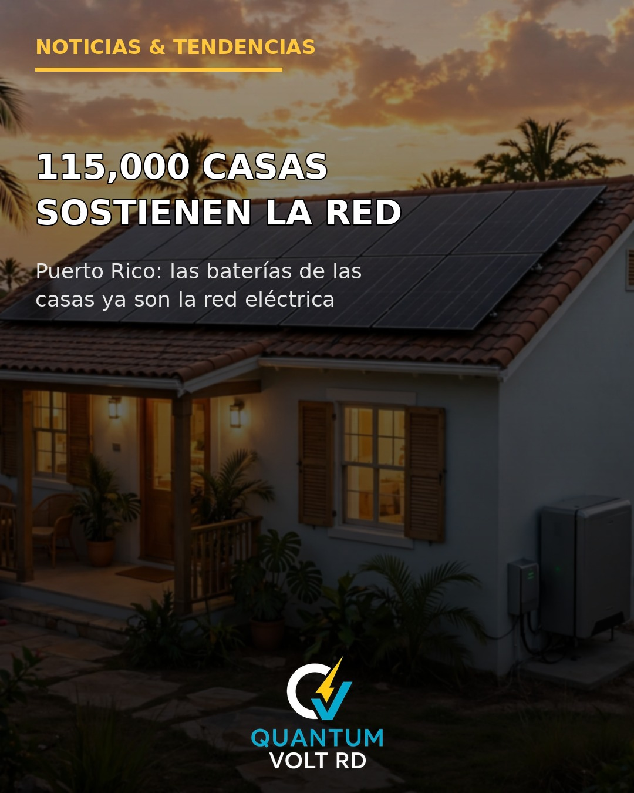
17 de noviembre de 2026 · Energía solar · Baterías
En Puerto Rico, casi 115,000 hogares con batería forman una central eléctrica virtual que ya evitó o suavizó más de 60 apagones desde junio de 2026. Es la primera de su tipo en Latinoamérica y el Caribe, y la segunda más grande de Estados Unidos por capacidad.
Leer la noticia completa →
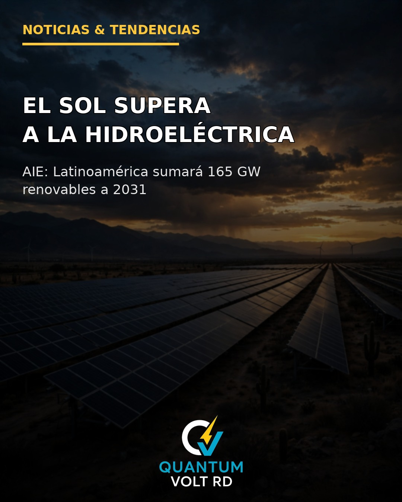
16 de noviembre de 2026 · Energía solar · Renovables
La Agencia Internacional de Energía publicó su informe Renewables 2026: Latinoamérica sumará 165 GW de capacidad renovable entre 2026 y 2031, y la energía solar superará a la hidroeléctrica en capacidad instalada antes de que termine la década. Para 2031, el 68 % de la electricidad de la región será renovable.
Leer la noticia completa →

15 de noviembre de 2026 · Energía solar · Baterías · Huawei
Huawei presentó su LUTERRA S2, un sistema residencial que junta inversor híbrido, batería modular de 5 a 15 kWh y respaldo ante apagones en una sola torre apilable. Su IA prevé el sol y el precio de la electricidad hora a hora y decide sola cuándo cargar y descargar, con hasta 99% de eficiencia y menos de 29 dB. Sale a la venta en Europa en enero de 2027.
Leer la noticia completa →

14 de noviembre de 2026 · Energía solar · Baterías
Un informe del Schneider Electric Research Institute, que simuló 40.500 escenarios, dice que combinar paneles solares, baterías y consumo coordinado podría recortar hasta un 40% los costes del sistema eléctrico en la década de 2030. Con los costos de hoy el ahorro ya sería de ~10%, y elegir mal el almacenamiento puede encarecer el sistema hasta un 35%.
Leer la noticia completa →

14 de noviembre de 2026 · Energía · Tecnología
Cemig, una de las distribuidoras más grandes de Brasil, desplegó junto a Huawei la primera red inalámbrica privada de 450 MHz para el sector energético en América Latina. La conectividad de los terminales de distribución subió al 99% y la confiabilidad de las comunicaciones al 99,99%.
Leer la noticia completa →
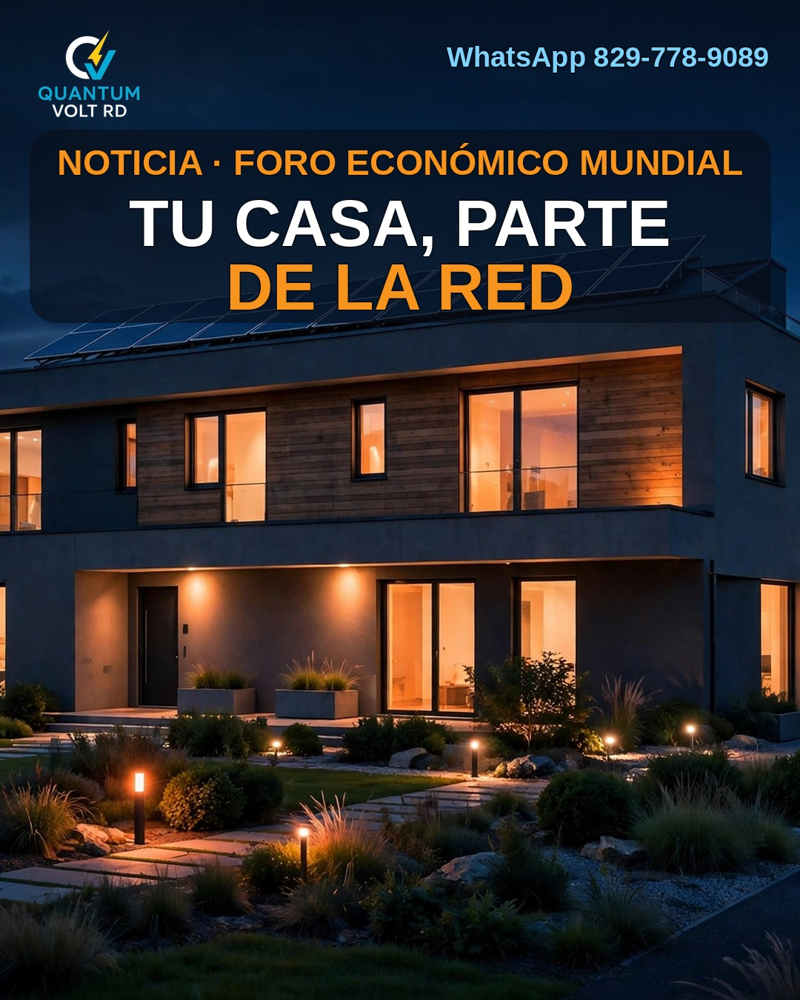
13 de noviembre de 2026 · Energía · Tecnología
El Foro Económico Mundial publicó hoy, junto a la COP31, sus 10 tecnologías energéticas emergentes para 2030. Una de ellas es la central eléctrica virtual: un software que coordina las baterías de tu casa, tu vehículo eléctrico y tu termostato para aliviar la red en las horas pico.
Leer la noticia completa →
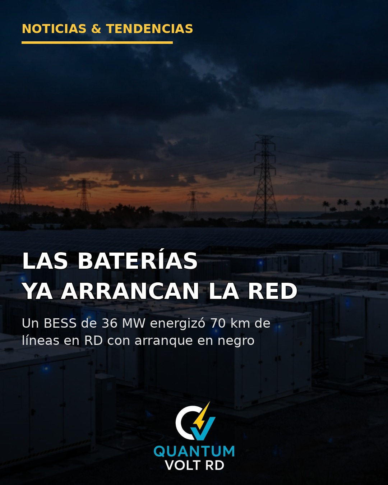
12 de noviembre de 2026 · Energía solar · Baterías
Un sistema de baterías de 36 MW / 40 MWh energizó 70 km de líneas de transmisión en República Dominicana, sin ayuda de una central convencional. Es el arranque en negro: la propia batería fija la tensión y la frecuencia para poner la red en marcha.
Leer la noticia completa →
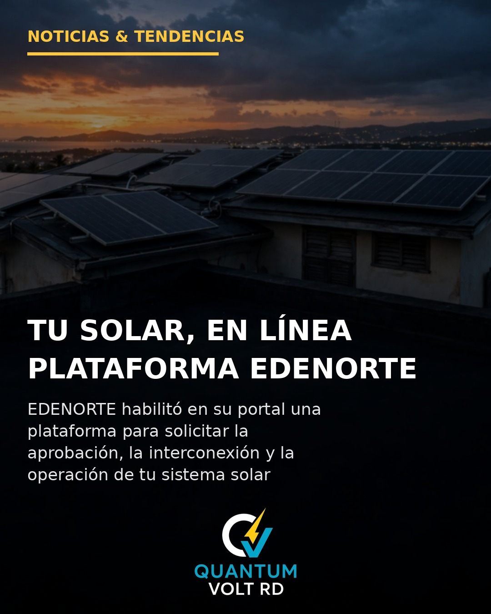
11 de noviembre de 2026 · Energía solar · EDENORTE
EDENORTE habilitó en su portal una plataforma en línea para solicitar la aprobación, la interconexión y la operación de tu sistema solar de generación distribuida, bajo la resolución SIE-007-2026-REG. Ahí mismo subes los documentos y le das seguimiento a tu expediente.
Leer la noticia completa →
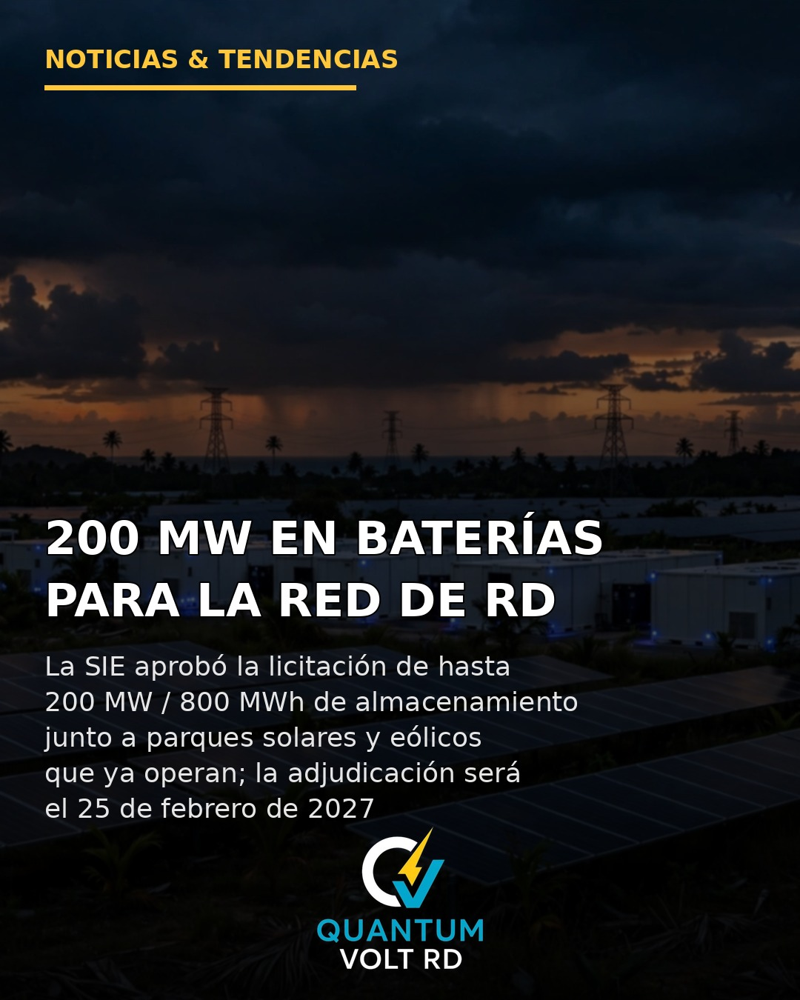
10 de noviembre de 2026 · Energía renovable · SIE
La SIE aprobó las bases de la licitación EDES-GER-SAEB-01-2026: hasta 200 MW / 800 MWh de baterías junto a parques solares y eólicos existentes, para usar la energía del sol en las horas de mayor demanda. Adjudicación el 25 de febrero de 2027.
Leer la noticia completa →
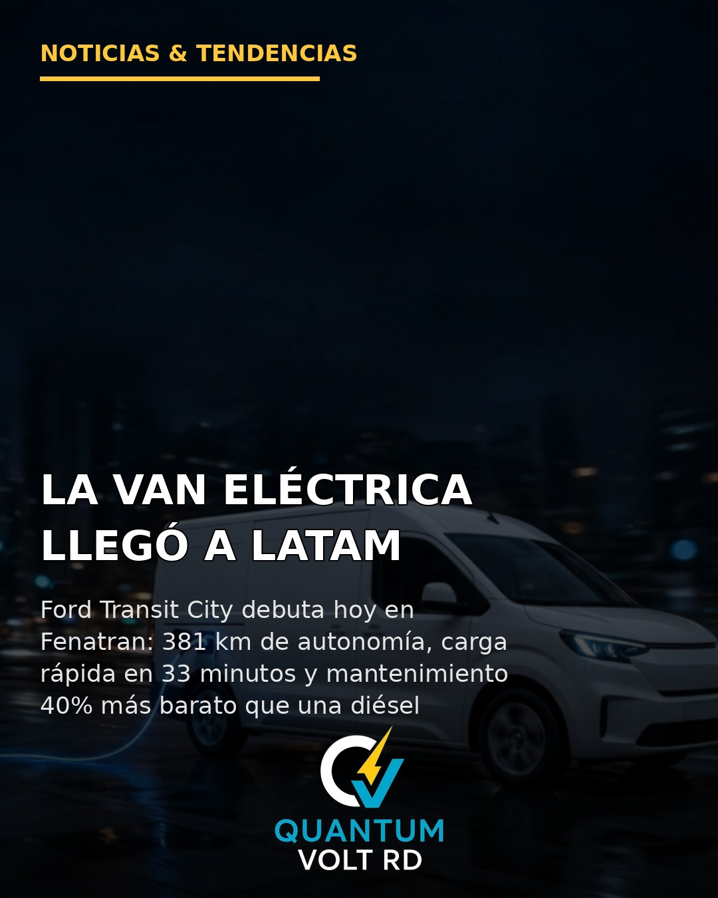
9 de noviembre de 2026 · Movilidad eléctrica · Ford
Ford presentó en Fenatran su Transit City eléctrica: 381 km de autonomía, batería LFP de 56 kWh y carga rápida del 20 al 80% en 33 minutos. Ya se vende en Argentina y llega a Perú y Sudamérica.
Leer la noticia completa →
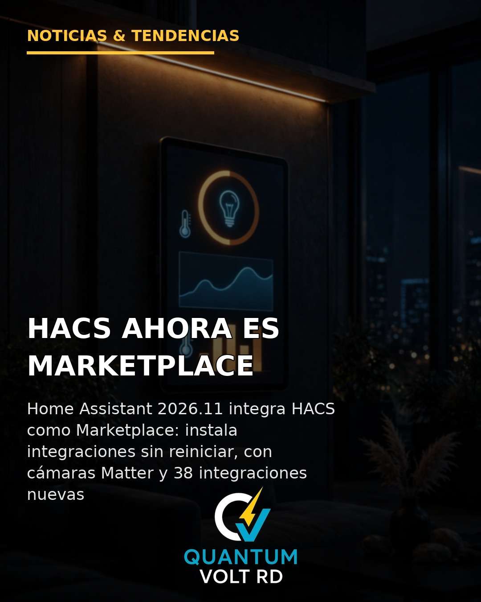
8 de noviembre de 2026 · Domótica · Home Assistant
Home Assistant 2026.11 integra HACS como Marketplace nativo: instala integraciones sin reiniciar y con migración automática. También trae cámaras Matter con audio bidireccional, LoRaWAN, 38 integraciones nuevas y un panel de energía con sensores en vatios.
Leer la noticia completa →
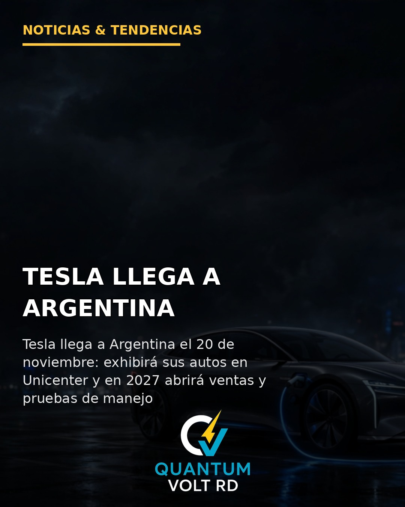
7 de noviembre de 2026 · Movilidad eléctrica · Tesla
Tesla confirmó su llegada a la Argentina: el próximo 20 de noviembre exhibirá sus primeros autos eléctricos en Unicenter, Martínez. En 2027 abrirá su punto de venta y habilitará pruebas de manejo, con el Model 3 y el Model Y como los modelos más probables.
Leer la noticia completa →
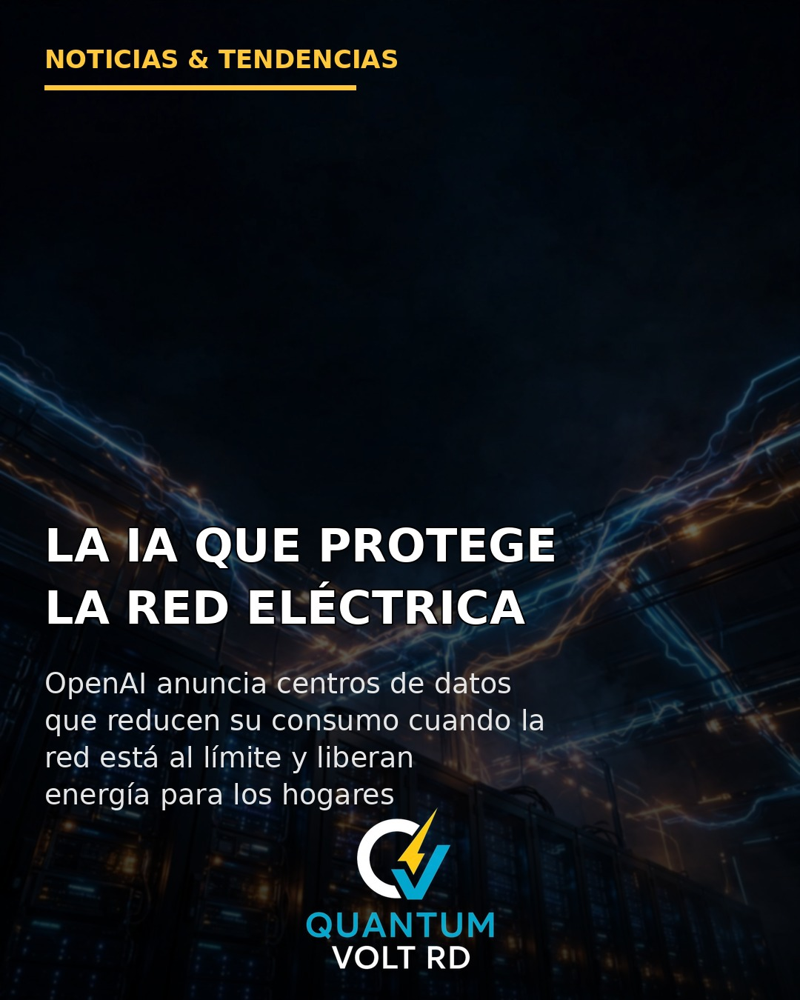
6 de noviembre de 2026 · Energía e inteligencia artificial · OpenAI
OpenAI lanzó su programa "Grid Protectors": sus futuros centros de datos reducirán su consumo cuando la red esté sobrecargada y liberarán energía para los hogares. El piloto, en Georgia, podrá liberar hasta 1.000 MW, el equivalente al consumo promedio de unos 700.000 hogares.
Leer la noticia completa →
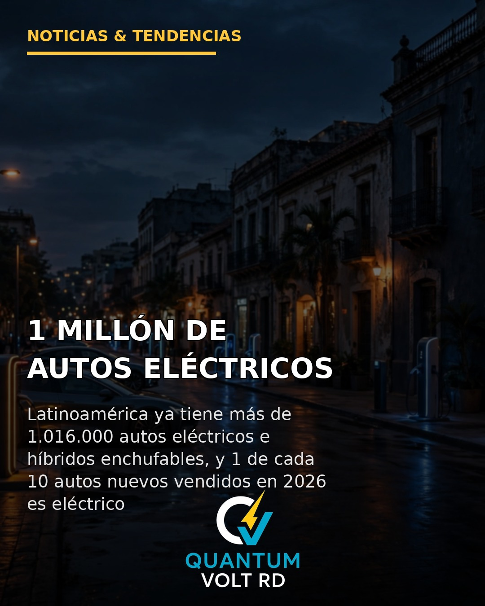
5 de noviembre de 2026 · Movilidad eléctrica · OLADE
América Latina superó el millón de autos eléctricos e híbridos enchufables en circulación, según OLADE: 1.016.034 a junio de 2026. En República Dominicana apenas el 1% de las ventas son eléctricas o híbridas: hay un enorme espacio para crecer.
Leer la noticia completa →
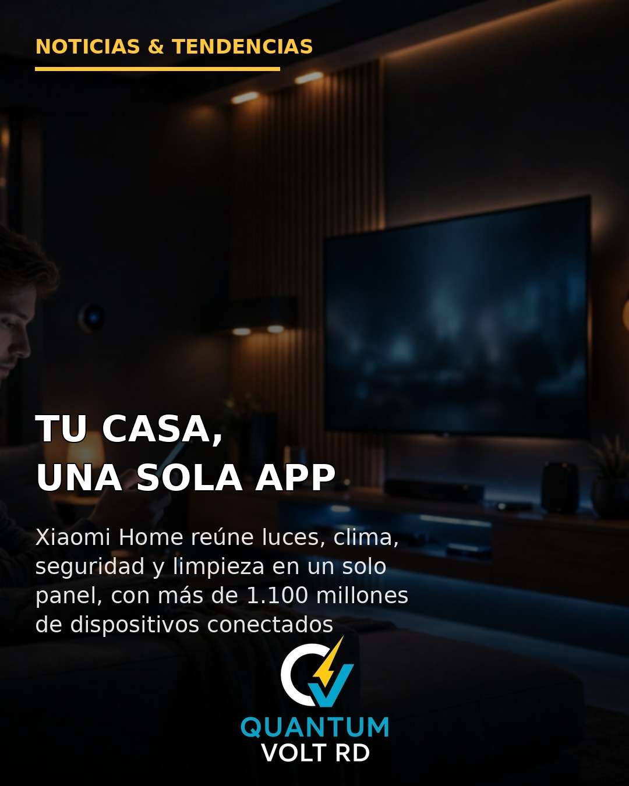
4 de noviembre de 2026 · Domótica · Xiaomi Home
Xiaomi Home reúne luces, climatización, seguridad y limpieza en una sola aplicación, con más de 1.100 millones de dispositivos conectados en todo el mundo. El valor de la domótica ya no es tener más aparatos, sino que todos trabajen juntos desde un solo panel.
Leer la noticia completa →
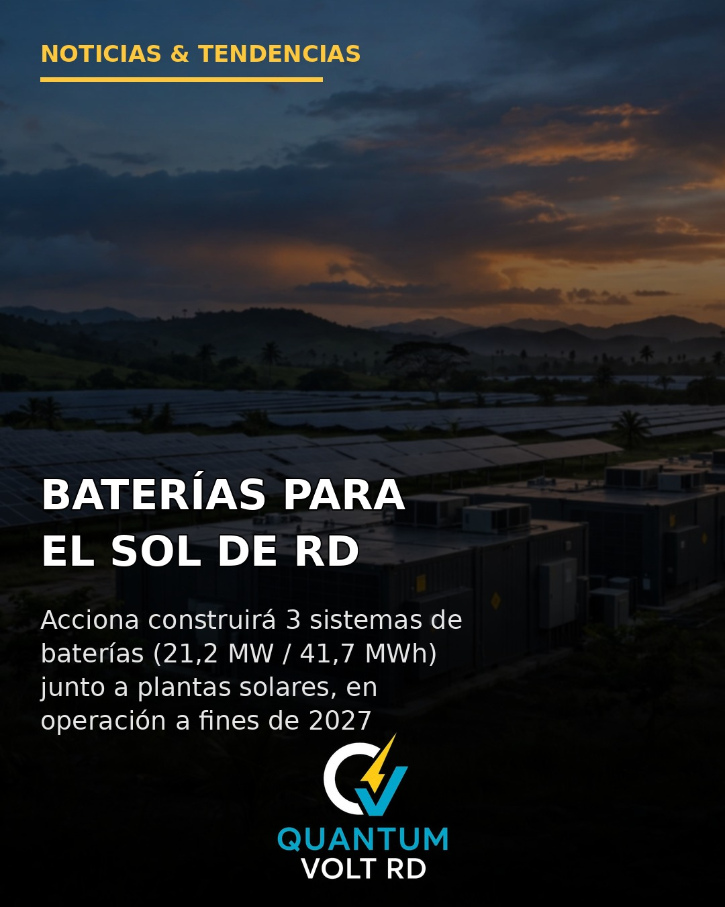
3 de noviembre de 2026 · Almacenamiento con baterías · Acciona Energía
Tres sistemas de baterías junto a las plantas solares Pedro Corto, Calabaza I y Cotoperí Solar, en operación en el último trimestre de 2027, para estabilizar la red con regulación de frecuencia.
Leer la noticia completa →
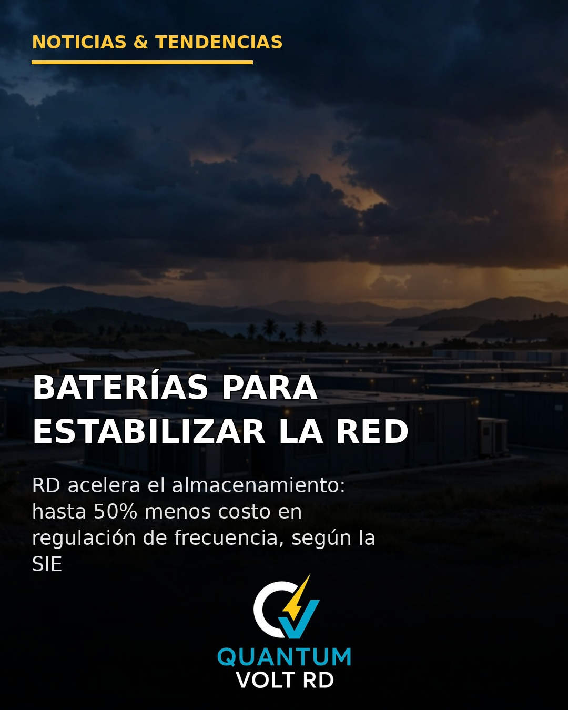
2 de noviembre de 2026 · Almacenamiento con baterías · SAEB
En 2025 el 81.1% de la generación dependió de combustibles fósiles importados, y la solar ya suma 1,580.96 MW. La SIE estima hasta 50% menos costo en regulación de frecuencia y los nuevos renovables de 20 MW o más deben incluir baterías del 50%.
Leer la noticia completa →
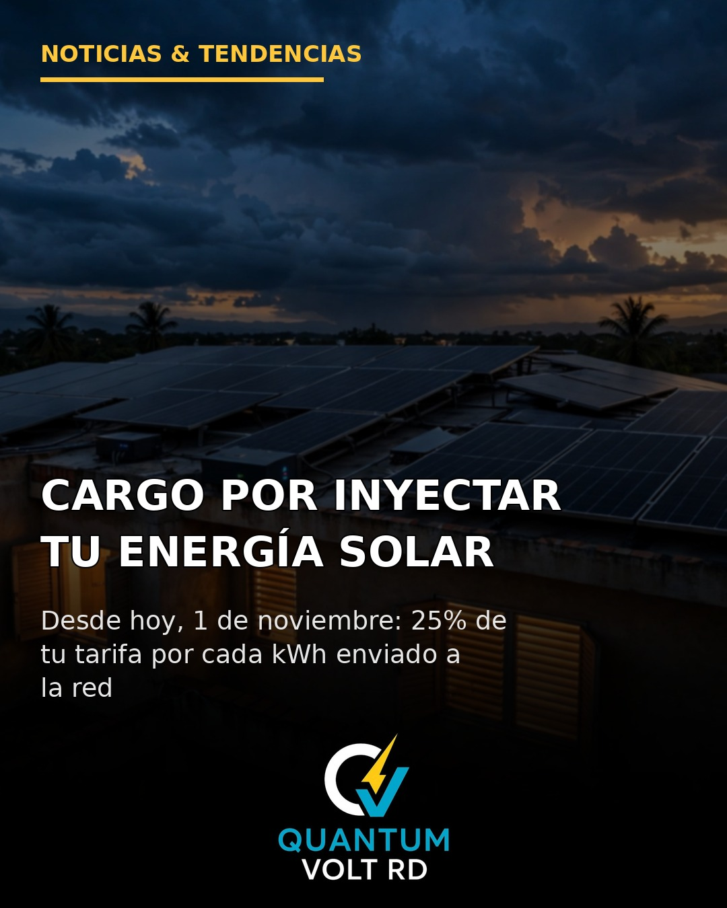
1 de noviembre de 2026 · Medición Neta · SIE-007-2026-REG
Desde el 1 de noviembre de 2026, la Resolución SIE-007-2026-REG aplica un cargo técnico (no es un impuesto) a determinados usuarios en Medición Neta. El autoconsumo no se cobra; los sistemas de inyección cero o con baterías quedan exentos.
Leer la noticia completa →
Las noticias nuevas se agregan al inicio de esta lista, de la más reciente a la más antigua.
← Volver a la página principal de Quantum Volt RD